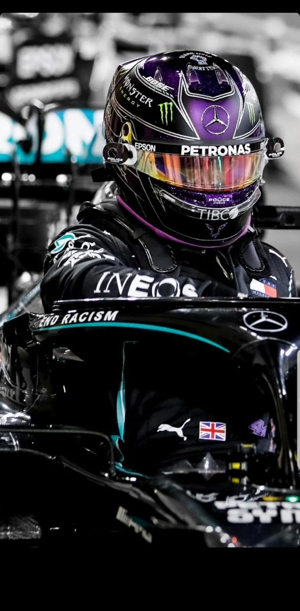
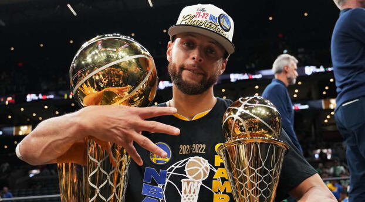
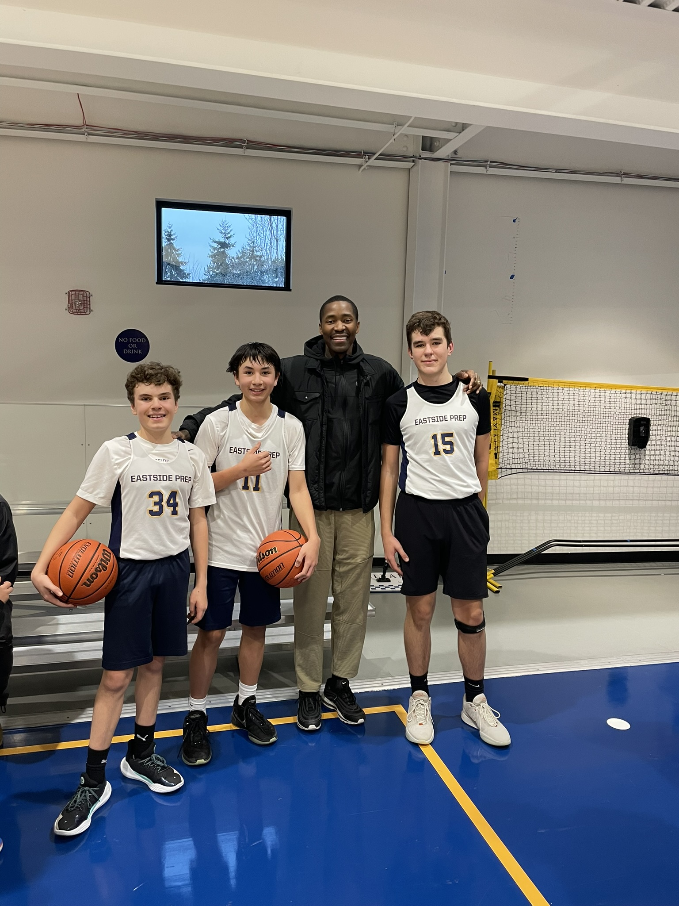
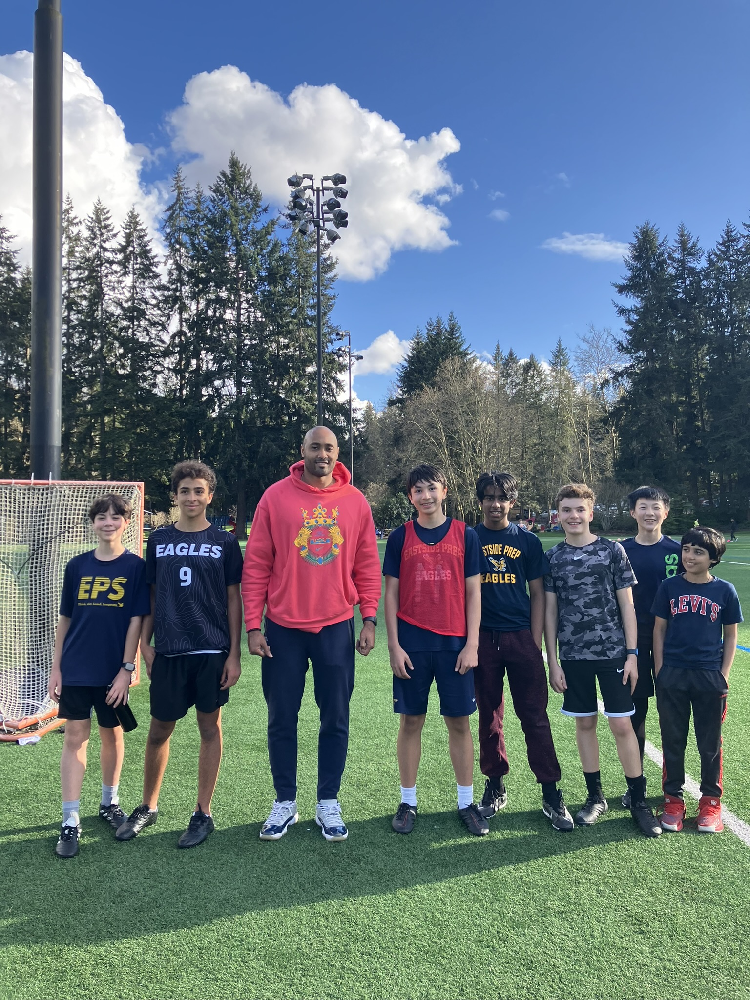

Here is a photo of Lewis Hamilton, my favorite Formula 1 driver:
Here is a photo of my favorite basketball player, Stephen Curry, posing with his 2 trophies after winning the NBA Finals in 2022:
Click to see a photo of one of my favorite retired NBA players, Kobe Bryant, in the 2008 Olympics.
Here are photos of me with famous athletes that I have met (KJ Wriight from the Seattle Seahawks, and Jamal Crawford from many different NBA teams):
 